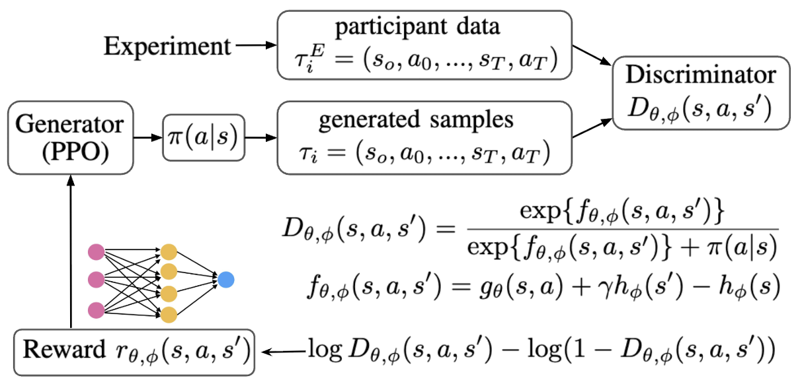

Recent News
- [2026.09] I will attend CPC 2026Computational Psychiatry Course 2026 as a teaching assistant (Zurich, Switzerland).
- [2026.07] I attended and served as a volunteer at ICML 2026International Conference on Machine Learning 2026 (Seoul, South Korea).
- [2026.06] I gave a poster presentation at OHBM 2026Organization for Human Brain Mapping 2026 (Bordeaux, France).
- [2026.06] I gave an oral presentation at KSDT 2026Korean Society for Digital Therapeutics 2026 Spring Conference (Jeju, South Korea).
Education
Georgia Institute of Technology
MS in Computer Science- Specialization: Artificial Intelligence
- GPA: 4.0/4.0
Seoul National University
BA in Psychology, BA in Child and Family Studies- Summa Cum Laude; University President's Award1st rank in College of Human Ecology
- Student President, Student Representative
- GPA: 4.2/4.3
Career
Computational Clinical Science Lab, Seoul National University
Post-Baccalaureate Researcher (Full-time)Advisor: Prof. Woo-Young Ahn
Oven Games Studio, Devsisters
Server Engineer, Game Developer (Full-time)Research Experience
Crosswalk Task: A naturalistic reinforcement learning paradigm for characterizing real-world risky behavior
Jinwoo Jeong, Woo-Young Ahn
- Developed a custom GymnasiumTowers, M., Kwiatkowski, A., Terry, J., et al. (2024). Gymnasium: A standard interface for reinforcement learning environments. arXiv. environment and a new real-time decision-making task for cognitive research.
- Collected and analyzed behavioral data from 300+ participants in an web-based experiment using Prolific.
- Trained deep inverse reinforcement learningFu, J., Luo, K., & Levine, S. (2018). Learning robust rewards with adversarial inverse reinforcement learning. In Proceedings of the International Conference on Learning Representations. models to derive context-specific indicators of risk-taking.

Hierarchical Bayesian Analysis on Hierarchical Gaussian Filter
Jinwoo Jeong, Juha Lee, Yusom Jo, Woo-Young Ahn
Conferences: CPC 2025Computational Psychiatry Course 2025 (Zurich, Switzerland) (workshop, blog articleArticle at hBayesDM library website)
Overestimated Volatility and Inflexible Belief Updating Underpin Aberrant Decision Making in Type-I Bipolar Disorder
Juha Lee*, Jinwoo Jeong*, Jerome R. Busemeyer, Brian F. O'Donnell, Woo-Young Ahn
Conferences: CPC 2026Computational Psychiatry Conference 2026 (New Haven, USA) (poster)
Developing Rapid and Reliable Behavioral Paradigms Using Adaptive Design Optimization
Sangho Lee*, Jeongyeon Shin*, Jinwoo Jeong, Jooyeon Jamie Im, Elena Psederska, Jasmin Vassileva, Mark A. Pitt, Woo-Young Ahn
Conferences: CPC 2025Computational Psychiatry Course 2025 (Zurich, Switzerland) (poster)
Investigating the effects of environmental stochasticity on real-time decision-making in a naturalistic driving task using inverse reinforcement learning
(*: equally contributed)
Industry Experience
CookieRun
Feb 2023 - Feb 2025- Developed a global mobile game with millions of MAU and over 50 million downloads.
- Implemented multiple game modes and out-game logic for 24 monthly updates.
- Responsible for maintaining cloud infrastructure (e.g., upgraded Kubernetes clusters in AWS EKS from v1.23 to v1.28) and participated in monthly server cost meetings.
- Participated in server engineer hiring as both an interviewer and a member of the coding test renewal task force.
Skills
- Programming Languages: Python, JavaScript, Java, Go, C++
- ML & RL: scikit-learn, PyTorch, GymnasiumTowers, M., Kwiatkowski, A., Balis, J., De Cola, G., Deleu, T., Goulão, M., ... & Younis, O. G. (2026). Gymnasium: A standard interface for reinforcement learning environments. Advances in Neural Information Processing Systems, 38., imitation
- Computational Modeling: Stan, R, MATLAB, hBayesDM
- Web & Backend: React, Spring, MySQL
- DevOps & Infrastructure: AWS, Terraform, Docker, Kubernetes